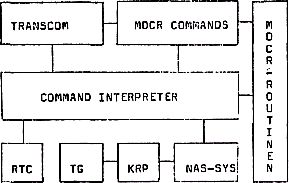

Nascom Journal |
Dezember 1981 · Ausgabe 11/12 |
Das hier vorgestellte Programm ist das schon seit langem angekündigte MDCR-Steuerprogramm. Es dient primär dem Betrieb des MDCR-Laufwerks, ist jedoch darüber hinaus universell einsetzbar. Außer den MDCR-Routinen ist unter anderem enthalten:
– ein Keyboard-Repeater mit akustischer Tastendruck-Quittierung
– ein interruptgesteuerter Tongenerator
– eine Interruptuhr mit Stundensignal und Stoppuhrfunktionen (1/100 sec.)
– ein komfortabler Command-Interpreter, der auch von externen Programmen (z.b. Editor, Eprom-Programmer) benutzt werden kann.
UNICON braucht zum Laufen ein interruptfähiges NAS-SYS (z.b. NAS-SYS i), einen Lautsprecheranschluß an Port 0 (siehe Schaltung) und das weiter unten beschriebene MDCR Interface (s.auch Nascom-Journal 3/81).
Die hier abgedruckte RAM-Version belegt 2k Speicherplatz von 4000h-4800h. Außerdem wird von den MDCR-Routinen ein Bereich von 20 Byte pro File unterhalb der Adresse 5000h überschrieben. Eine Eprom-Version mit beliebiger Startadresse können Sie von mir beziehen.
Doch nun zur eigentlichen Beschreibung. Unicon ist folgendermaßen aufgebaut:

TRANSCOM – Transient Command Area
RTC – Real Time Clock
TG – Tone Generator
KRP – Keyboard Repeater
Nach dem Starten auf Adresse 4000h springt das Programm in die Ausführungsschleife des Command-Interpreters und meldet sich mit„:“ Nun können Sie einen Befehl eingeben. Der Command-Interpreter führt 4 Arten von Befehlen aus:
– Alle NAS-SYS-Befehle. Hierzu muß vor den Befehl ein Schrägstrich „/“ eingetippt werden. „/N“ schaltet z.b. den Keyboard-Repeater ab.
– Interpreter-interne Befehle. Es gibt folgende internen Befehle:
N kehrt zu NAS-SYS zurück, Uhr und Keyboard-Repeater laufen dabei weiter.
P macht einen Cold-Start. Die Uhr wird ab-, der Repeater eingeschaltet. Die MDCR-Befehle werden in die Command Area geladen.
T startet die Uhr, die in der Kopfzeile mitläuft. T HHMM stellt die Uhr (HH=Stunden, MM=Minuten).
S stoppt die Uhr im Stoppuhrbetrieb.
? listet die Befehle auf, die augenblicklich in der Command Area stehen.
– File-Befehle, Der Interpreter startet ein Programm, das als File auf der Cassette steht, Als Befehlswort gilt der Name des Files, Vor den Namen muß ein Doppelpunkt „:“ eingetippt werden,
– Befehle der Command Area. Das ist eine Befehlstabelle, deren Startadresse in der Speicherstelle 0BFCh steht. Normalerweise ist dies die MDCR-Befehlsliste.
Zur Ausführung der MDCR-Befehle muß nicht das volle Wort eingetippt werden; es genügen die Anfangsbuchstaben. Filenamen können mit „*“ abgekürzt werden. Z.B. kann man statt „VERIFY Testprogramm“ einfach „V TE*“ eintippen, Wird nun auf „New Line“ bzw, „Enter“ gedrückt, schreibt der Interpreter den Befehl aus („VERIFY TE*“) und bezieht ihn auf das erste File, dessen Namen mit „TE“ beginnt.
Nach erneutem „Enter“ erfolgt die Ausführung. Namen werden ab 12 Buchstaben abgeschnitten. Nun zu den einzelnen Befehlen:
– FORMAT löscht und formatiert die Cassette. Dieser Vorgang dauert ca. 3 Minuten; jede Cassette muß vor dem erstmaligen Beschreiben formatiert werden. Während des Formatierens wird die Bandlänge gemessen und daraus berechnet, wieviele Bytes auf die Cassette passen.
– SAVE nnn AAAA BBBB SSSS speichert das File „nnn“ auf Cassette. AAAA ist die Anfangs-, BBBB die End- und SSSS die Startadresse. Nach dem Abspeichern wird angezeigt, wieviele kBytes jetzt noch auf die Cassette passen
| Seite 35 von 55 |
|---|